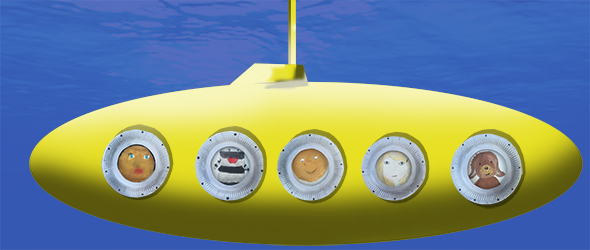

Facebook
Pinterest
Instagram
⌕ Search
ES
EN
DE
☰ Menu
Home
The House
Accessories
Decorate
Instruccions
Illustration
Custom water bottles
Notebook crafts and activities 01
App NOT ONLINE RIGHT NOW
Blog
Holidays
Christmas
Easter
Halloween
Carnival & costumes
Valentine’s Day
Birthday
Mother’s/Father’s Day
Back to school
Seasons
Spring
Summer
Autumn
Winter
What to do
Toys
Games
Printables
Food & recipes
Decoration
Painting
Experiments
Outdoors
Learning
Animals
Gifts & jewellery
Building & tricks
Other crafts
Material
Paper
Cardboard
Paper rolls
Recycling
Stones
Leaves & nature
Fabric & sewing
Home
›
Blog
Blog
Holidays
Christmas
Easter
Halloween
Carnival & costumes
Valentine’s Day
Birthday
Mother’s/Father’s Day
Back to school
Seasons
Spring
Summer
Autumn
Winter
What to do
Toys
Games
Printables
Food & recipes
Decoration
Painting
Experiments
Outdoors
Learning
Animals
Gifts & jewellery
Building & tricks
Other crafts
Material
Paper
Cardboard
Paper rolls
Recycling
Stones
Leaves & nature
Fabric & sewing
Material
Pencilholder
Material
Cactus 2
Material
Cactus
Fruit
Piñata
Activity
Letters
Activity
POUS
Occasion
Table decoration
Activity
Animal heads
Activity
Magic
Activity
Wooden discs 02
Paint
Porthole

Activity
Summer memory game
Activity
Bracelet
Paint
Calendar
Activity
Wooden discs
Activity
Read
House
Paper Tipi
Activity
Papa
Nut
NUT BOATS 03
Material
Monster
Activity
House of cards
Activity
Thumbnail Puff
Activity
Door deco
Printables
Eames Elephant
← Newer
Page 3 / 40
Older →